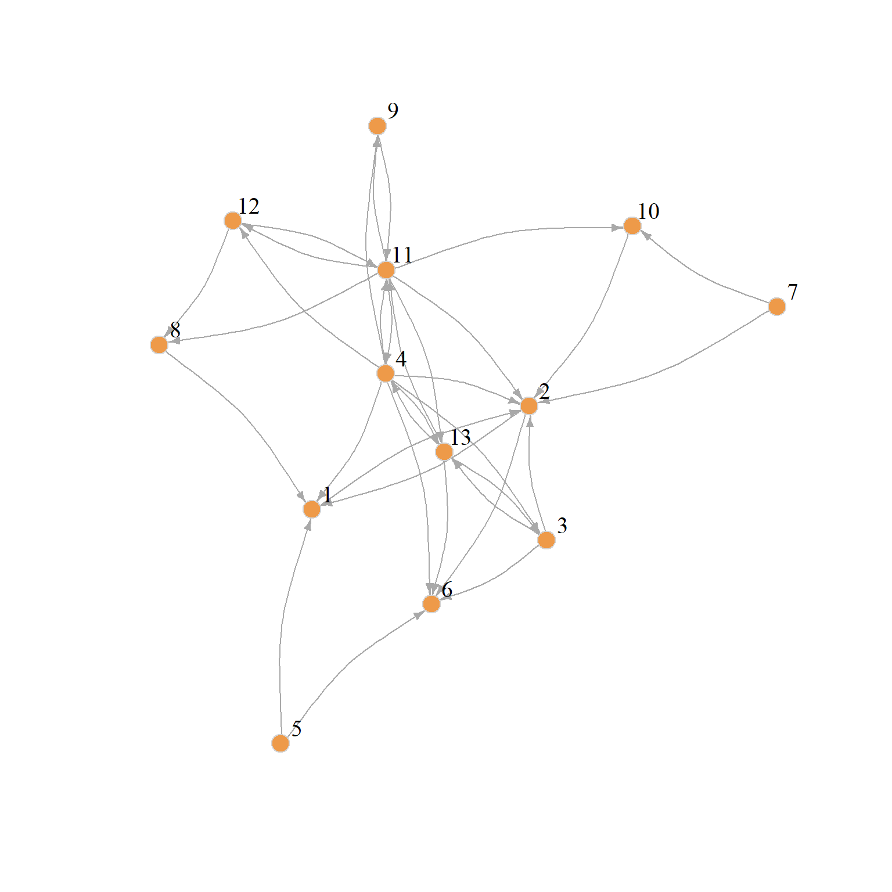
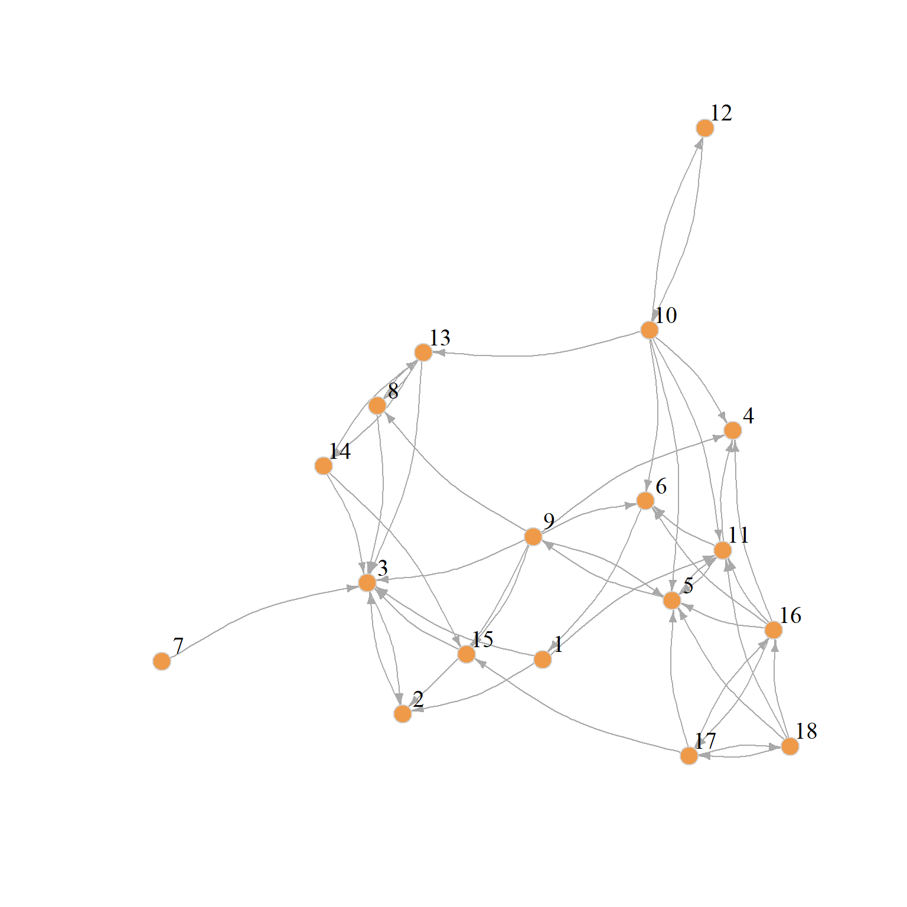

Sometimes we may want to figure out how similar a given node’s position in one social network is to that of another node in a different network. This calls for a method that could allow us to compare how similar a node in one graph is to other nodes in another graph.
A particularly interesting version of this problem arises when we have information on the same set of nodes across different set of relations. In that case, we may be interested in answering the question as to whether nodes occupy similar or dissimilar positions across the networks defined by the different relations.
Blondel et al. (2004) describe an approach that can help us make headway on this problem. They use a similar iterative procedure that we saw can be used to compute prestige scores from directed graphs (like PageRank and HITS) but this time to compute similarity scores between pairs of nodes across graphs.
The idea, just like with prestige scoring, is that the two set of nodes in each graph start with the same set of similarity scores, and then we update them as we traverse the connectivity structure of the two graphs.
So let’s say the adjacency matrix of the first graph is \(\mathbf{A}\) and that of the second graph is \(\mathbf{B}\). The first graph has \(n_A\) number of nodes and the corresponding quantity in the second graph is \(n_B\) our target similarity matrix \(\mathbf{Z}\), comparing the node sets in the two graphs, will therefore be of dimensions \(n_B \times n_A\).
We initialize \(z_{ij}(0) = 1\) for all \(i\) and \(j\); that is, \(\mathbf{Z}(0)\) is a matrix full of ones. At each time step subsequent to that, we fill up the \(\mathbf{Z}\) matrix with new values according to:
1 Computing Node Similarities Across Different Graphs
Let us see how this would work with real data. We will compare two subgraphs of the larger law_advice network (Lazega 2001) from the networkdata package. This is a directed advice-seeking network so a node goes from advisee to adviser.
We create two subgraphs. One composed of older male partners (aged fifty or older) and the other composed of the women in the firm (both partners and associates). They look like this:

(a) Older Men Partners

(b) Women Lawyers
Figure 1: Two directed advice networks.
A function to compute the Blondel similarity as described in can be written as:
Code
blondel.sim <-function(a, b) {if (is.null(rownames(a)) ==TRUE) {rownames(a) <-1:nrow(a) } # checking if matrix has row namesif (is.null(colnames(a)) ==TRUE) {colnames(a) <-1:ncol(a) } # checking if matrix has column namesif (is.null(rownames(b)) ==TRUE) {rownames(b) <-1:nrow(b) } # checking if matrix has row namesif (is.null(colnames(b)) ==TRUE) {colnames(b) <-1:ncol(b) } # checking if matrix has column names z <-matrix(1, nrow(b), nrow(a)) # initializing similarity matrix to all ones matrixrownames(z) <-rownames(b) # naming rows of similarity matrixcolnames(z) <-rownames(a) # naming columns of similarity matrix d <-1# initializing delta d.o <-2# initializing comparison delta m <-1# initializing iteration counterwhile (d != d.o | m %%2!=0) { # do while the previous delta is different from the current delta and the iteration is odd z.o <- z # initializing old similarity matrix d.o <- d # old delta equals previous delta z <- (b %*% z.o %*%t(a)) + (t(b) %*% z.o %*% a) # blondel et al. similarity equation z <- z /norm(z, type ="F") # normalizing similarity matrix d <-abs(sum(abs(z)) -sum(abs(z.o))) # updating delta m <- m +1# updating iteration counter } z <-apply(z, 2, function(x) { x /max(x) }) # normalizing converged matrix by column maxreturn(z) # return converged similarity matrix}
Which is modeled after our status game function but instead of computing a vector of scores we are populating a whole matrix!
The basic task is to figure out which nodes from the first matrix are most similar to which nodes from the second. That is, given these two networks can be identify actors who play similar roles in each?
And here are the results presented in tabular form:
We can see that node 5 in the older men partner’s graph (a highly central node in terms of being an advice seeker) is most similar to node 9 in the women lawyer’s graph (also a highly central node in terms of being an advice seeker). Node 11 in the older men partner’s graph, on the other hand, who’s mostly an advice-giver, is most similar to node 5 in the women lawyer’s graph who’s also the most central advicee-giver. So it looks like it works!
2 Equivalence to HITS
One neat thing that Blondel et al. (2004) show is that we can also take a network and compare it to ideal-typical small graphs and get scores for how much each node in the observed network resembles each of the nodes in the hypothetical ideal-typical structure.
More specifically, they show that we can run their algorithm to compare any network to the following two-node graph:
The first two columns are the scores using the function to compute the Blondel et al. similarity to each of the two nodes in the Hub/Authority micro-graph and the third and fourth columns are the scores we get from the igraph function hits scores, which as we can see, are identical.
3 Computing a Brokerage Score
Of course in a directed graph, there are more than two ideal typical “roles.” In addition to “sender” (Hub) or “receiver” (Authority) we may also have “intermediaries” or “pass along” nodes. We can thus get an “intermediary” score for each node by comparing any network to the following three-node graph:
Columns one and three gives us versions of the Hub and Authority scores (respectively), “purged” of any contribution made by the intermediary status of nodes. Column two now gives us an ordinal score for how much the row node resembles and intermediary (or broker) in the network.
We can use the second column score to rank each node in term of their brokerage status. We can see that the “purest” broker in the women’s advice network is woman 11, followed closely by woman 5. This makes sense from looking at the spring embedding layout of which puts them right at the center of the action. The weakest brokers, on the other hand, are woman 7 and 12, which, as we can see from are the most peripheral lawyers in the advice network.
References
Blondel, Vincent D, Anahı́ Gajardo, Maureen Heymans, Pierre Senellart, and Paul Van Dooren. 2004. “A Measure of Similarity Between Graph Vertices: Applications to Synonym Extraction and Web Searching.”SIAM Review 46 (4): 647–66.
Lazega, Emmanuel. 2001. The Collegial Phenomenon: The Social Mechanisms of Cooperation Among Peers in a Corporate Law Partnership. Oxford University Press.
Source Code
---title: "Structural Similarity Across Graphs"---Sometimes we may want to figure out how similar a given node's position in one social network is to that of another node in a *different* network. This calls for a method that could allow us to compare how similar a node in one graph is to *other nodes* in *another graph*. A particularly interesting version of this problem arises when we have information on the same set of nodes across different set of relations. In that case, we may be interested in answering the question as to whether nodes occupy similar or dissimilar positions across the networks defined by the different relations. @blondel_etal04 describe an approach that can help us make headway on this problem. They use a similar iterative procedure that we saw can be used to compute [prestige scores](prest-eigen.qmd) from directed graphs (like [PageRank](prest-pagerank.qmd) and [HITS](prest-hits.qmd)) but this time to *compute [similarity](sim-gen.qmd)* scores between *pairs* of nodes *across* graphs. The idea, just like with prestige scoring, is that the two set of nodes in each graph start with the same set of similarity scores, and then we update them as we traverse the connectivity structure of the two graphs. So let's say the adjacency matrix of the first graph is $\mathbf{A}$ and that of the second graph is $\mathbf{B}$. The first graph has $n_A$ number of nodes and the corresponding quantity in the second graph is $n_B$ our target similarity matrix $\mathbf{Z}$, comparing the node sets in the two graphs, will therefore be of dimensions $n_B \times n_A$. We initialize $z_{ij}(0) = 1$ for all $i$ and $j$; that is, $\mathbf{Z}(0)$ is a matrix full of ones. At each time step subsequent to that, we fill up the $\mathbf{Z}$ matrix with new values according to:$$ \mathbf{Z}(t + 1) = \mathbf{B}\mathbf{Z(t)}\mathbf{A}^T + \mathbf{B}^T\mathbf{Z(t)}\mathbf{A}$$ {#eq-blondel}To ensure convergence, we then normalize the $\mathbf{Z}$ matrix after every update using our trusty Euclidean (Frobenius) norm:$$\mathbf{Z}(t) = \frac{\mathbf{Z}(t)}{||\mathbf{Z}(t)||_2}$$Where:$$||\mathbf{Z}(t)||_2 = \sqrt{\sum_i \sum_j z_{ij}(t)^2}$$## Computing Node Similarities Across Different Graphs Let us see how this would work with real data. We will compare two subgraphs of the larger `law_advice` network [@lazega01] from the `networkdata` package. This is a directed *advice-seeking* network so a node goes *from* advisee to adviser. We create two subgraphs. One composed of older male partners (aged fifty or older) and the other composed of the women in the firm (both partners and associates). They look like this:```{r}#| echo: false#| fig-width: 8#| fig-height: 8#| layout-ncol: 2#| label: fig-law#| fig-cap: "Two directed advice networks."#| fig-subcap:#| - "Older Men Partners"#| - "Women Lawyers"library(networkdata)library(igraph)library(ggraph)set.seed(123)g <-subgraph(law_advice, which(V(law_advice)$status ==1))g1 <-subgraph(g, which(V(g)$gender ==1&V(g)$age >50))g2 <-subgraph(law_advice, which(V(law_advice)$gender ==2))set.seed(123)plot(g1,edge.arrow.size = .5,vertex.color ="tan2",vertex.size =6, vertex.frame.color ="lightgray",vertex.label.color ="black", vertex.label.cex =1.25,vertex.label.dist =1, edge.curved =0.2)plot(g2,edge.arrow.size = .5,vertex.color ="tan2",vertex.size =6, vertex.frame.color ="lightgray",vertex.label.color ="black", vertex.label.cex =1.25,vertex.label.dist =1, edge.curved =0.2)```A function to compute the **Blondel similarity** as described in can be written as:```{r}blondel.sim <-function(a, b) {if (is.null(rownames(a)) ==TRUE) {rownames(a) <-1:nrow(a) } # checking if matrix has row namesif (is.null(colnames(a)) ==TRUE) {colnames(a) <-1:ncol(a) } # checking if matrix has column namesif (is.null(rownames(b)) ==TRUE) {rownames(b) <-1:nrow(b) } # checking if matrix has row namesif (is.null(colnames(b)) ==TRUE) {colnames(b) <-1:ncol(b) } # checking if matrix has column names z <-matrix(1, nrow(b), nrow(a)) # initializing similarity matrix to all ones matrixrownames(z) <-rownames(b) # naming rows of similarity matrixcolnames(z) <-rownames(a) # naming columns of similarity matrix d <-1# initializing delta d.o <-2# initializing comparison delta m <-1# initializing iteration counterwhile (d != d.o | m %%2!=0) { # do while the previous delta is different from the current delta and the iteration is odd z.o <- z # initializing old similarity matrix d.o <- d # old delta equals previous delta z <- (b %*% z.o %*%t(a)) + (t(b) %*% z.o %*% a) # blondel et al. similarity equation z <- z /norm(z, type ="F") # normalizing similarity matrix d <-abs(sum(abs(z)) -sum(abs(z.o))) # updating delta m <- m +1# updating iteration counter } z <-apply(z, 2, function(x) { x /max(x) }) # normalizing converged matrix by column maxreturn(z) # return converged similarity matrix}```Which is modeled after our status game function but instead of computing a vector of scores we are populating a whole matrix!The basic task is to figure out which nodes from the first matrix are most similar to which nodes from the second. That is, given these two networks can be identify actors who play similar roles in each?And here are the results presented in tabular form:```{r}library(kableExtra)A <-as.matrix(as_adjacency_matrix(g1))B <-as.matrix(as_adjacency_matrix(g2))K <-blondel.sim(A, B)kbl(K, align ="c", format ="html", row.names =TRUE, digits =2) %>%column_spec(1, bold =TRUE) %>%kable_styling(full_width =TRUE,bootstrap_options =c("hover", "condensed", "responsive") )```We can see that node 5 in the older men partner's graph (a highly central node in terms of being an advice seeker) is most similar to node 9 in the women lawyer's graph (also a highly central node in terms of being an advice seeker). Node 11 in the older men partner's graph, on the other hand, who's mostly an advice-giver, is most similar to node 5 in the women lawyer's graph who's also the most central advicee-giver. So it looks like it works!## Equivalence to HITSOne neat thing that @blondel_etal04 show is that we can also take a network and compare it to ideal-typical small graphs and get scores for how much each node in the observed network resembles each of the nodes in the hypothetical ideal-typical structure. More specifically, they show that we can run their algorithm to compare any network to the following two-node graph:```{r}g <-make_empty_graph(2)g <-add_edges(g, c(1, 2))V(g)$name <-c("Hub", "Authority")plot(g,edge.arrow.size =1,vertex.color ="tan2",vertex.size =12, vertex.frame.color ="lightgray",vertex.label.color ="black", vertex.label.cex =1.5,vertex.label.dist =-3)```In which case, the resulting "similarity" scores, will be equivalent to Kleinberg's [Hub and Authority scores](prest-hits.qmd)! We can check that this is the case for the women's lawyers advice graph:```{r}A <-as.matrix(as_adjacency_matrix(g))B <-as.matrix(as_adjacency_matrix(g2))K <-blondel.sim(A, B)tab <-cbind(K,Hub.Score =round(hits_scores(g2)$hub, 4),Auth.Score =round(hits_scores(g2)$authority, 4))kbl(tab, align ="c", format ="html", row.names =TRUE, digits =2) %>%column_spec(1, bold =TRUE) %>%kable_styling(full_width =TRUE,bootstrap_options =c("hover", "condensed", "responsive") )```The first two columns are the scores using the function to compute the Blondel et al. similarity to each of the two nodes in the Hub/Authority micro-graph and the third and fourth columns are the scores we get from the `igraph` function `hits scores`, which as we can see, are identical. ## Computing a Brokerage ScoreOf course in a directed graph, there are more than two ideal typical "roles." In addition to "sender" (Hub) or "receiver" (Authority) we may also have "intermediaries" or "pass along" nodes. We can thus get an "intermediary" score for each node by comparing any network to the following three-node graph:```{r}g <-make_empty_graph(3)g <-add_edges(g, c(1, 2, 2, 3))V(g)$name <-c("Hub", "Broker", "Authority")plot(g,edge.arrow.size =1,vertex.color ="tan2",vertex.size =12, vertex.frame.color ="lightgray",vertex.label.color ="black", vertex.label.cex =1.5,vertex.label.dist =2)```Here are the results for the women lawyers graph:```{r}A <-as.matrix(as_adjacency_matrix(g))B <-as.matrix(as_adjacency_matrix(g2))K <-blondel.sim(A, B)kbl(K, align ="c", format ="html", row.names =TRUE, digits =2) %>%column_spec(1, bold =TRUE) %>%kable_styling(full_width =TRUE,bootstrap_options =c("hover", "condensed", "responsive") )```Columns one and three gives us versions of the Hub and Authority scores (respectively), "purged" of any contribution made by the intermediary status of nodes. Column two now gives us an ordinal score for how much the row node resembles and intermediary (or broker) in the network. We can use the second column score to rank each node in term of their brokerage status. We can see that the "purest" broker in the women's advice network is woman 11, followed closely by woman 5. This makes sense from looking at the spring embedding layout of which puts them right at the center of the action. The weakest brokers, on the other hand, are woman 7 and 12, which, as we can see from are the most peripheral lawyers in the advice network.